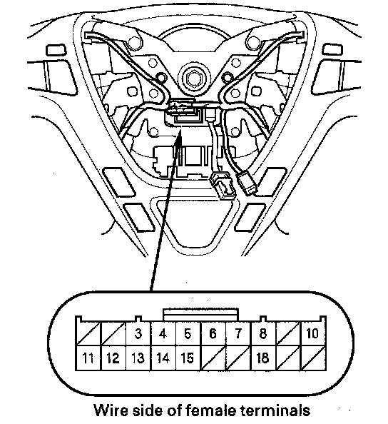
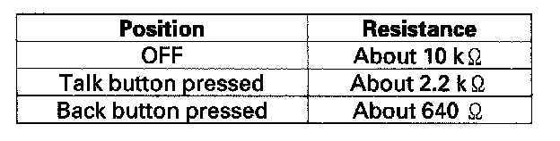
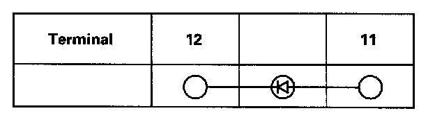

Voice Control Switch Test
Voice Control Switch Test1. Remove the driver's airbag assembly.

2. Remove the 20P connector from the cable reel.

3. Measure the resistance between the No. 8 and No. 18 terminals in each switch position according to the table.
4. If the resistance is not as specified, replace the voice control switch.

5. Use a diode tester between the terminals in each switch position according to the table.
6. If the diode test is not as specified, replace the voice control switch.